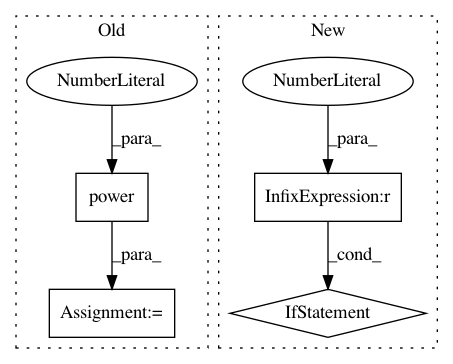

1be089b38e0b90a19e7111c9cdffa5c8bf06a3bf,smac/epm/rfr_imputator.py,RFRImputator,impute,#RFRImputator#Any#Any#Any#Any#,133
Before Change
uncensored_y = numpy.power(10, uncensored_y)
self.cutoff = numpy.power(10, self.cutoff)
self.threshold = numpy.power(10, self.threshold)
imputed_y = numpy.power(10, imputed_y)
if not numpy.isfinite(imputed_y).all():
self.logger.critical("Imputed values are not finite, %s" %
str(imputed_y))
After Change
for index in range(len(censored_y))]
imputed_y = numpy.array(imputed_y)
if sum(numpy.isfinite(imputed_y) == False) > 0:
// Replace all nans with threshold
self.logger.critical("Going to replace %d nan-value(s) with "
"threshold" %
sum(numpy.isfinite(imputed_y) == False))
imputed_y[numpy.isfinite(imputed_y) == False] = self.threshold
if it > 0:
// Calc mean difference between imputed values this and last
// iteration, assume imputed values are always concatenated
// after uncensored values
In pattern: SUPERPATTERN
Frequency: 3
Non-data size: 4
Instances
Project Name: automl/SMAC3
Commit Name: 1be089b38e0b90a19e7111c9cdffa5c8bf06a3bf
Time: 2016-03-07
Author: lindauer@informatik.uni-freiburg.de
File Name: smac/epm/rfr_imputator.py
Class Name: RFRImputator
Method Name: impute
Project Name: flow-project/flow
Commit Name: 3353b5f71b5fe7656ac5221e8e447e776f4fd90f
Time: 2017-03-09
Author: kanaadp@gmail.com
File Name: cistar-dev/cistar/controllers/base_controller.py
Class Name: BaseController
Method Name: safe_velocity
Project Name: pymc-devs/pymc3
Commit Name: 35afe54b6e46d99988ccf2d772da414939df2d69
Time: 2017-04-14
Author: maxim.v.kochurov@gmail.com
File Name: pymc3/sampling.py
Class Name:
Method Name: init_nuts